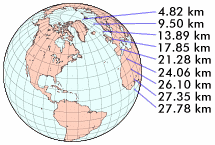
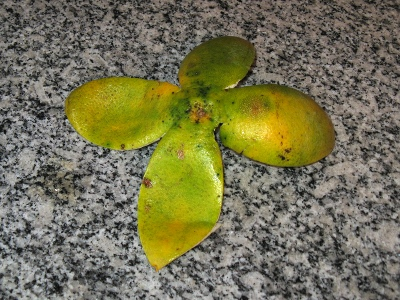
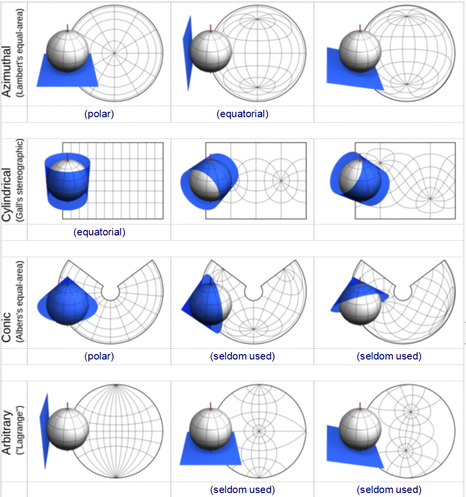

基本的定义和概念
原文链接:: Basic Definitions and Concepts
地球的形状
由于地图是一种表现形式，因此必须首先确定被表现对象的原始形状。大地测量学是制图学的一个重要分支，研究地球的形状以及它与地球表面特征的关系。
球体, 椭球体和大地水准面
大地水准面 被定义为地球重力场的表面，它与平均海平面大致相同。其方向与重力方向垂直。因为地球的质量并非在各个点均匀分布，因此重力的方向也会相应发生变化，所以大地水准面的形状是不规则的。
椭球体 是通过二维椭圆创建的三维形状。椭圆是扁平化的圆形，具有一个长轴（较长的轴）和一个短轴（较短的轴）。如果旋转椭圆，旋转所形成的形状即为椭球体。
Geoid(大地水准面) 来自希腊语，意思是 "地球形状"，是我们世界形状的常见定义。这种递归的描述是必要的，因为没有简单的几何形状与地球相匹配。
像所有超过一定质量的空间物体一样，地球上的物质聚集成球形，这使重力和势能最小化。
然而，围绕其轴线的快速旋转导致中间（赤道）隆起，两极变平；由此产生的形状被称为球体或扁椭圆体。赤道直径比极地直径长近1/300
平均而言，地表垂直于每一点的引力，这也影响到土地水平。然而，由于不规则的地壳密度和土地分布，质量集中并不均匀。除了旋转隆起，一些研究人员认为，南半球是膨胀的，其极点是凹陷的，而另一半是压缩的，极点是凸起的（由此产生的形状类似于梨子，但平均曲率变形不超过50米）。还有人认为，赤道本身是椭圆的
最后，表面不光滑，使地球形状更加复杂.
这些因素使制图员的工作变得非常复杂，但根据任务的不同，一些不规则的情况可以被忽略。例如，尽管在当地很重要，但在行星尺度上，地形是微不足道的：最高的陆地山峰高出海平面不到9公里，接近地球直径的1/1440；最深的海渊的深度大约是直径的1/1150。
对于覆盖面积非常大的地图，尤其是世界范围内的地图，可以假定地球是完全球形的，因为任何形状上的不精确性都会因为数据和显示分辨率上不可避免的误差而相形见绌。这一假设在本文的大部分内容中都是成立的。相反，对于非常小的地区，地形特征占主导地位，测量可以假设是在一个平面上作业。
基准面
当一个旋转椭球体的形状与地球相近时，基准面用于定义旋转椭球体相对于地心的位置。基准面给出了测量地球表面上位置的参考框架。它定义了经线和纬线的原点及方向。
对于小区域的高精度地图，基本的椭球形状是不能忽略的。大地基准是定义参考椭球的一组参数(包括轴长度和相对于地球真实中心的偏移量)。对于每个测绘区域，可以仔细选择不同的基准，使其与平均海平面最匹配，从而与地形特征最匹配。因此，地图的数据采集涉及测量，或测量参考点的高度和距离作为与特定基准的偏差(这是一项棘手的任务:由于上述不规则性，重力——因此铅锤和杠杆——并不总是对准地球中心)。
区域或国家地图采用了若干标准基准面。国际基准面确实存在，但可能不像本地基准点那样适合任何特定地区。
坐标系统
经纬度
为清晰起见，木质球体去掉了一个八角形；铜质箭头定义了坐标系的起源。白色的 "点 "由两个角度或坐标定位：其纬度和经度。每一个点都有一个直接位于对面的对应点，称为其反点（此处未显示)。

选定的纬线（红色）和经线（蓝色），这里间隔15°，组成一个球形格子。可能的纬线和经线的数量是无限的；应该呈现多少取决于地球仪（或地图)的目的和大小。
虽然地球是一个三维物体，但当它被认为是球形时，其表面有一个恒定的半径，所以它的任何一点都可以用极地两坐标系统来唯一地识别。
给定一个极轴(地球每天围绕它旋转)，一个将地球分成两半的正交平面(即赤道平面)和其上的一个任意参考轴，任何表面点确定一个纬度，即从地球中心向赤道平面测量的最小角度，以及一个经度，即从任意轴到赤道上由纬度确定的点的投影的最小角度。
方里网是由行星表面的坐标线组成的球形网格，包括法线上的圆，即垂直于南北轴的圆，称为纬线，以及以该轴为弦的半圆弧，称为经线。顾名思义，没有一条纬线是相互交叉的，而所有经线都在地理极点相遇。每条纬线与每条经线相交的角度为90°。这一特性和其他特性有助于评估地图变形。
纬线和经线的集合是无限的，但在一个地图中当然只能包括一个子集。一个点的纬度和经度，通常都以度为单位，分别定义了纬线和经线的交叉点。因此，纬度指的是与赤道平面的北至南的角度，而经度则表示与参考轴所定义的特定子午线的西至东的角度。纬度通常从南纬90°到北纬90°，而经度则从西经180°到东经180°。
纬线属性

地球轨道的截面示意图。AT是轴倾角，大约23.5°。
作为一个自然参照物，最长的纬线将地球分为两个相等的半球，即北方和南方；因此它被称为赤道。其他四条重要的纬线是由天文学上的限制所确定的。地理上的南北轴线与地球围绕太阳的轨道平面相比，实际倾斜度略小于23.5°。这就说明了一年中不同的季节和不同的昼夜时间长度。
每年12月21日左右，太阳光垂直落在南纬23.5°附近的平行线上。那是南半球最长的一天（注意它的大部分都暴露在阳光下，所以那一天被称为南半球的夏至），但却是北半球最短的一天（因此是冬至）；不仅是较短的日照时间，而且太阳光线的入射角较浅，这也是赤道以北温度较低的原因。
在6月21日附近，一个类似的现象也会沿着与北纬相对的平行线发生。根据定义，这两条平行线环绕着热带地区；它们是以太阳在这些日期所在的黄道星座命名的，即南回归线（南）和北回归线（北）。在南回归线以南的地区，太阳在中午时分似乎总是在观察者的北方运行；在同一时刻，在北回归线以北的地方，太阳总是在观察者的南方运行，而在热带地区，太阳有时在南方，有时在北方，取决于季节。
从90°中减去轴向倾斜，我们得到了北极圈（约66.5°N）和南极圈（约66.5°S）的纬度。12月21日前后，太阳在南极圈内没有一整天的时间落下。往南走，我们会得到更长的连续日照时间，在极地可达6个月。在南极洲的冬季有相应的长夜。当然，同样的情况也发生在北纬度地区，有六个月的偏移。
同一平行线上的各点遭受类似的太阳照射率，因此容易出现类似的气候（不考虑其他因素，如海拔、风/海况和地形）。
一个点的纬度可以从中午时分太阳在地平线上的角度推断出来，这时太阳在天空中显得最高，垂直的木桩投射出的阴影最短。水手们使用六分仪等仪器来测量纬度。

从极点到赤道，各点之间的东西距离以一分钟的太阳时相隔。在每个极点，人们只需转身就能体验到一天中的每一刻。
经线属性
同一经线上的所有点都有相同的太阳时间或当地时间。由于一年中不同的日长，应用校正公式将其转换为当地平均时间。为了方便统一每个区域的当地时间(1海里，约1853米，相当于沿赤道0.1 '的角度，或4秒的时间差)，世界被分成24个时区，每个15°宽。在日常生活中，一个时区内的每个点都被认为具有相同的标准时间(实际上，一些国家仍然使用太阳时)。在实践中，时间跳跃的边界很少跟随经纬网，一般以行政界限界定,(通常在国家或地区的边界线)以方便地保持相关地方的同步。
与赤道不同的是，没有一个容易定义的主经线或 "主 "经线，主要是通过政治共识，于1884年在英国伦敦附近的格林威治皇家天文台固定下来。这种选择的唯一明显优势是将对向子午线--在许多世界地图的左、右边缘附近--远离大多数人居住的地区。这条相反的子午线是国际日期线的基点，它将世界的一半分在两个不同的日子。同样，这条线也有些不规则，以便将国家领土，主要是太平洋岛屿，保持在一个时区。
与寻找一个点的纬度相比，获得经度更加复杂，通常是比较参考子午线上的中午和所讨论的点之间的时间间隔。
地图、地球仪和投影

“投影”意味着将特征从地球转移到合适的表面，如切平面、切圆柱或截断圆锥上。更靠近表面的区域通常会更好地呈现出来。
从椭球体或球体（左）到平面贴图（右)。中间是一个参考表面,仅用于阐释实际构造过程和可视化显示，深灰色的球到平面的转换路径展示了投影会不可避免地会导致变形。

橘子皮提供了地图中变形的经典演示：要将其展开为平面, 必须进行撕开,压平和拉伸。
任何地理学研究都需要简化地球模型，比如地球仪或地图。两者都不完美：地球仪实用性差，平面地图永远少不了误差和变形，因此选择或创建一张好地图涉及到有趣的选择和权衡。
什么是投影
地图投影是将球面或者椭球面向投影面(大部分时候是平面)转换(数学上称为映射)的过程。虽然现在有许多投影，但只有少部分投影目前还在广泛使用。有些投影曾经在历史上很重要，但被更好的选择所取代，有些只在非常特殊的情况下有用，而有些则只是设计者好奇心的产物。
我们经常能看到概念上的辅助表面,比如圆锥体,圆柱体,椭球面或者圆环面,然后球体上的数据(通常是透视构造)转移到辅助面上,然后展开辅助面得到投影,许多投影被归类为圆柱/圆锥投影,但是大部分投影的命名只是一个类比,或者用于定义的,因为它们实际上并不是基于一个中间的辅助投影面设计的,相反,是投影得到的结果可以贴到辅助面上(译注:部分投影是直接用数学手段计算出来的,并不是直接映射到辅助面上再展开的).
无论投影过程多么复杂，原始表面的特征永远不能完美地转换为平面图：球体映射到平面上总会存在或大或小的变形.变形即角度/形状/距离/面积与真实球面的差异.
每个地图投影都有一个特征的变形模式。制图过程的一个重要部分是理解变形，并选择投影、映射区域和坐标原点的最佳组合，为每项工作将变形减到最小。
圆锥体和圆柱体是高斯曲率为零的可展开曲面（简而言之，在曲面上的每一个点都至少有一条完全包含在曲面中的直线经过）。因此，虽然当将一个球体映射到圆锥体或圆柱体上时，总是会发生失真，但它们在平面上的重新投影（“展开”）不会产生进一步的错误。
不可避免的变形
一个球体（加上极轴）的两个准正交图，分为八个等部分，被四张相同比例尺的地图包围，从右上角顺时针依次是：方位等距离投影，兰伯特投影，莫勒的等面积四瓣星状投影(Maurer's equal-area star with four lobes), 温克尔三重投影。
上面的几个投影描绘了相同的球形数据如何以不同的方式被拉伸、压缩、扭曲变形。
- 方位等距离投影只关注保持靠近中心极点部分的方位和距离，但外半球被大大拉伸了：它的极轴变成了一个圆点。
- 兰伯特投影的两个极点变成了线,但它覆盖了与原来的球体相同的区域,而且八块区域的形状完全一致相等。
- 星状投影比较特殊,具有不相等的八瓣和明显的连续形变；然而它的八瓣是等面积的。
- 在温克尔三重投影中，八块区域有不同的形状，面积改变，极点也是线性的，但整体上变形较小。总而言之,正交视图和地图也只能显示一部分的地球,
所有的投影都有变形,没有投影能适合所有情况,如果投影面是斜切的话,八块区域将会更加奇怪
坐标原点的选择

表格中展示了三种（正轴、横轴和斜轴)投影面应用于四种(方位等积、高尔立体、亚尔勃斯等积圆锥和拉格朗日)投影，蓝色表示切投影面(只给出了无限多个可能的投影面中的几个）。一些投影，如高尔立体投影，实际上可以通过透视几何得出；然而，对大多数投影来说，投影面只是说明性的：地图可以展示到一个投影面上，但不是从投影面计算出来的。
一些投影群的独特方里网（例如方位投影和圆锥投影中的径向对称子午线，圆柱形图中的矩形网格）是通过指定的投影面来实现的。尽管有一个常见的误解，但这种分类并不是排他性的：大多数投影既不涉及圆锥体，也不涉及圆柱体，但也不是方位。对已完成的地图的微旋转，比如把它侧向或倒过来，投影面和投影都将保持不变。另一方面，修改投影面既不影响所表示的区域，也不影响整个地图的形状。
投影面
译注:投影面又称“地图平面”。地 图投影中,地球椭球体或球体部分表面的承影平面。投影面都是可展平的面,分为平面、圆锥面、圆柱面。以平面为投影面进行投影的,称方位投影;以圆锥面为投影面投影的,称圆锥投影;以圆柱面为投影面投影的,称圆柱投影。
投影的另一个关键特征是投影面相对于球面的方向。
一个特定的投影可以使用多个投影面，大致由经纬网和最靠近概念投影面的球体区域定义，通常是世界地图的中心(因为变形和裁剪,不一定是实际的中心)
- 极地的地图将南北轴与投影系统的对齐，因此当其中一个极点必须位于地图的中心时很有用；
- 赤道地图以赤道为中心，它横跨地图的一个主轴线(主轴是水平的)；
- 斜轴地图既没有极轴，也没有与投影系统对齐的赤道平面。
- 使用正轴投影面时:
- 投影中最“自然”的投影面，称为法线、传统、直接或正则，通常由几何约束决定;通过最简单的计算，生成经纬网格(方里网)。
- 方位投影和圆锥投影经常用平行极地的投影面
- 圆柱形和伪环柱投影经常用赤道面；
- 方位投影和圆锥投影的经纬网只有直线和圆弧；
- 一般的圆柱投影经纬网都是直线
- 横轴投影面是通过将极轴旋转90°而产生的：如果法面在极点，横轴投影面则以赤道的某个地方为中心；如果法面与赤道对齐，横轴则与子午线对齐，以此类推。
- 投影中最“自然”的投影面，称为法线、传统、直接或正则，通常由几何约束决定;通过最简单的计算，生成经纬网格(方里网)。
- 对于正轴和横轴投影，唯一剩下的选择是，绕着极轴将地球旋转多少旋转，以确定地图的中心子午线。对于斜轴,因为有两个旋转角度，有无限的选择。
一些作者对投影面有不同的定义：认为投影面是定义投影曲面与地球相切还是相割的（这当然是更狭义的含义，因为许多投影不是通过辅助投影曲面定义的）。还有一些人视情况而定,甚至使用投影面来区分为投影是基于椭球体还是简单球体设计的
理论上，特别是假设地球是简单球体的时候，任何投影可以用任何投影面：但是，平行/子午线系统是一种可能起源于任何地方的惯例，尽管很难想象其他的投影面比两极投影面更有用。然而，许多投影几乎总是在用特定的投影面：
距离或者变形属性不是特别有用。例如许多研究，如温度、疾病流行率和生物多样性，取决于气候，因此大致取决于纬度；对于恒定平行间距的投影，在赤道方面，纬度直接转换为垂直距离，简化了比较
很多经纬网由简单曲线组成的投影,最初是由几何构造定义的。因为这些投影的投影面非常复杂,在计算机出现之前,没有办法简单的绘制出来（事实上，地图制图是研究像快速计算对数这些数学方法的一个重要动机）
尽管斜轴投影面常常是有用的，但一般来说，斜轴的实际椭球的计算相当复杂，并不是对每种投影都适用。
地图制作者的选择
综上所述，任何想要创建比简笔画更好的地图的人都必须面对一系列的决定，例如：
- 谁是地图的受众，地图的目的是什么？它有一个主题吗？
- 地图的面积有多大？像一个小镇，还是整个星球？适当的比例尺是什么？
- 有哪些数据源可用？
- 使用什么地球模型？椭球还是简单球形？如果是椭球，哪个标准是最好的？
- 根据地图的受众、主题和目的，哪些属性必须被保存、强调或隐藏？
- 哪种投影最合适？它是否有细节需要调整，比如标准的平行线，还是中央子午线？
- 是否需要修改投影面，例如使地图是斜轴投影面，会改善精度吗？
- 需要做进一步修改么，比如中断地图，有帮助吗？裁切范围、进行地图综合或重新选择地图中心怎么样？
并不是每个选择都是完全独立的。例如：
- 地图的面积和比例大致呈反相关
- 等值线图（表示彩色或图案区域的关系）和其他表示密度的主题地图应使用等面积的投影
- 一些投影只用于椭球体模型，而许多只能用于球形模型
- 有些投影的修改投影面后没有什么意义,或者难以计算
因此，地图投影的研究虽然只是制图工作的一个很小部分，但非常重要